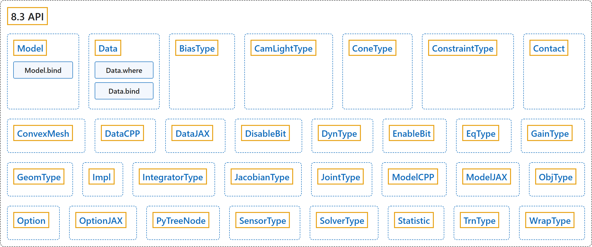

8.3 API
Classification

Glossary
| Term | Definition | 中文翻译 | Source |
|---|---|---|---|
| 8.3 API API |
(No definition) | （无定义） | Google DeepMind, n.d., "MJX API" |
| Model Model 模型 |
"Static model of the scene that remains unchanged with each physics step." | 场景的静态模型，在每个物理步中保持不变。 | Google DeepMind, n.d., "MJX API", para. 1 |
| Model.bind bind 方法 |
"Bind a Mujoco spec to an MJX Model." | 把 MuJoCo spec 绑定到 MJX Model。 | Google DeepMind, n.d., "MJX API", para. 1 |
| Data Data 数据 |
"Dynamic state that updates each step." | 每一步都会更新的动态状态。 | Google DeepMind, n.d., "MJX API", para. 1 |
| Data.where where 方法 |
"Selectively merge self and other based on done." | 根据 done 有选择地合并 self 和 other。 | Google DeepMind, n.d., "MJX API", para. 1 |
| Data.bind bind 方法 |
"Bind a Mujoco spec to an MJX Data." | 把 MuJoCo spec 绑定到 MJX Data。 | Google DeepMind, n.d., "MJX API", para. 1 |
| BiasType BiasType 偏置类型 |
"Type of actuator bias." | 执行器偏置的类型。 | Google DeepMind, n.d., "MJX API", para. 1 |
| CamLightType CamLightType 相机光源类型 |
"Type of camera light." | 相机光源的类型。 | Google DeepMind, n.d., "MJX API", para. 1 |
| ConeType ConeType 摩擦锥类型 |
"Type of friction cone." | 摩擦锥的类型。 | Google DeepMind, n.d., "MJX API", para. 1 |
| ConstraintType ConstraintType 约束类型 |
"Type of constraint." | 约束的类型。 | Google DeepMind, n.d., "MJX API", para. 1 |
| Contact Contact 接触 |
"Result of collision detection functions." | 碰撞检测函数的结果。 | Google DeepMind, n.d., "MJX API", para. 1 |
| ConvexMesh ConvexMesh 凸网格 |
"Geom properties for convex meshes." | 凸网格的 geom 属性。 | Google DeepMind, n.d., "MJX API", para. 1 |
| DataCPP DataCPP C++ 数据 |
"Minimal Data implementation holding only the pointer." | 只保存指针的最小 Data 实现。 | Google DeepMind, n.d., "MJX API", para. 1 |
| DataJAX DataJAX JAX 数据 |
"JAX-specific data." | JAX 专用的数据。 | Google DeepMind, n.d., "MJX API", para. 1 |
| DisableBit DisableBit 禁用位 |
"Disable default feature bitflags." | 禁用默认功能的位标志。 | Google DeepMind, n.d., "MJX API", para. 1 |
| DynType DynType 动力学类型 |
"Type of actuator dynamics." | 执行器动力学的类型。 | Google DeepMind, n.d., "MJX API", para. 1 |
| EnableBit EnableBit 启用位 |
"Enable optional feature bitflags." | 启用可选功能的位标志。 | Google DeepMind, n.d., "MJX API", para. 1 |
| EqType EqType 等式类型 |
"Type of equality constraint." | 等式约束的类型。 | Google DeepMind, n.d., "MJX API", para. 1 |
| GainType GainType 增益类型 |
"Type of actuator gain." | 执行器增益的类型。 | Google DeepMind, n.d., "MJX API", para. 1 |
| GeomType GeomType 几何类型 |
"Type of geometry." | 几何体的类型。 | Google DeepMind, n.d., "MJX API", para. 1 |
| Impl Impl 实现 |
"Implementation to use." | 要使用的实现。 | Google DeepMind, n.d., "MJX API", para. 1 |
| IntegratorType IntegratorType 积分器类型 |
"Integrator mode." | 积分器模式。 | Google DeepMind, n.d., "MJX API", para. 1 |
| JacobianType JacobianType 雅可比类型 |
"Type of constraint Jacobian." | 约束雅可比矩阵的类型。 | Google DeepMind, n.d., "MJX API", para. 1 |
| JointType JointType 关节类型 |
"Type of degree of freedom." | 自由度的类型。 | Google DeepMind, n.d., "MJX API", para. 1 |
| ModelCPP ModelCPP C++ 模型 |
"Minimal Model implementation holding only the pointer." | 只保存指针的最小 Model 实现。 | Google DeepMind, n.d., "MJX API", para. 1 |
| ModelJAX ModelJAX JAX 模型 |
"JAX-specific model data." | JAX 专用的模型数据。 | Google DeepMind, n.d., "MJX API", para. 1 |
| ObjType ObjType 对象类型 |
"Type of object." | 对象的类型。 | Google DeepMind, n.d., "MJX API", para. 1 |
| Option Option 选项 |
"Physics options." | 物理选项。 | Google DeepMind, n.d., "MJX API", para. 1 |
| OptionJAX OptionJAX JAX 选项 |
"JAX-specific option." | JAX 专用的选项。 | Google DeepMind, n.d., "MJX API", para. 1 |
| PyTreeNode PyTreeNode pytree 节点 |
"Base class for dataclasses that should act like a JAX pytree node." | 让数据类表现得像 JAX pytree 节点的基类。 | Google DeepMind, n.d., "MJX API", para. 1 |
| SensorType SensorType 传感器类型 |
"Type of sensor." | 传感器的类型。 | Google DeepMind, n.d., "MJX API", para. 1 |
| SolverType SolverType 求解器类型 |
"Constraint solver algorithm." | 约束求解器算法。 | Google DeepMind, n.d., "MJX API", para. 1 |
| Statistic Statistic 统计量 |
"Model statistics (in qpos0)." | 模型统计量（在 qpos0 处）。 | Google DeepMind, n.d., "MJX API", para. 1 |
| TrnType TrnType 传动类型 |
"Type of actuator transmission." | 执行器传动的类型。 | Google DeepMind, n.d., "MJX API", para. 1 |
| WrapType WrapType 缠绕类型 |
"Type of tendon wrap object." | 肌腱缠绕对象的类型。 | Google DeepMind, n.d., "MJX API", para. 1 |
References
Google DeepMind. (n.d.). MJX API. MuJoCo Documentation (Version 3.17.0). Retrieved October 31, 2026, from https://mujoco.readthedocs.io/en/stable/mjx_api.html